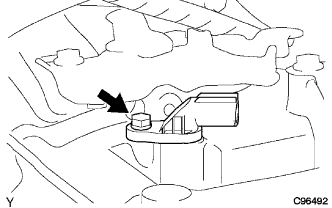

|
ボルト2本をはずし、エアクリーナブラケツトを取りはずす。
トランスミッション レボリューション センサ 取り外し |
| 1. エア クリーナASSY取りはずし |
エアクリーナキヤツプとエアクリーナホースNo.1を取りはずす。
エアクリーナフイルタエレメントを取りはずす。
ボルト3本をはずす。
エアクリーナインレツトNo.1を切り離してエアクリーナケースを取りはずす。
| 2. エアクリーナ ブラケット取りはずし |
|
ボルト2本をはずし、エアクリーナブラケツトを取りはずす。
| 3. トランスミッション レボリューション センサ取りはずし |
レボリユーシヨンセンサコネクタを切り離す。
|  |
ボルトをはずし、レボリユーシヨンセンサをオートマチツクトランスアクスルから取りはずす。